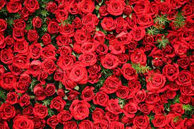
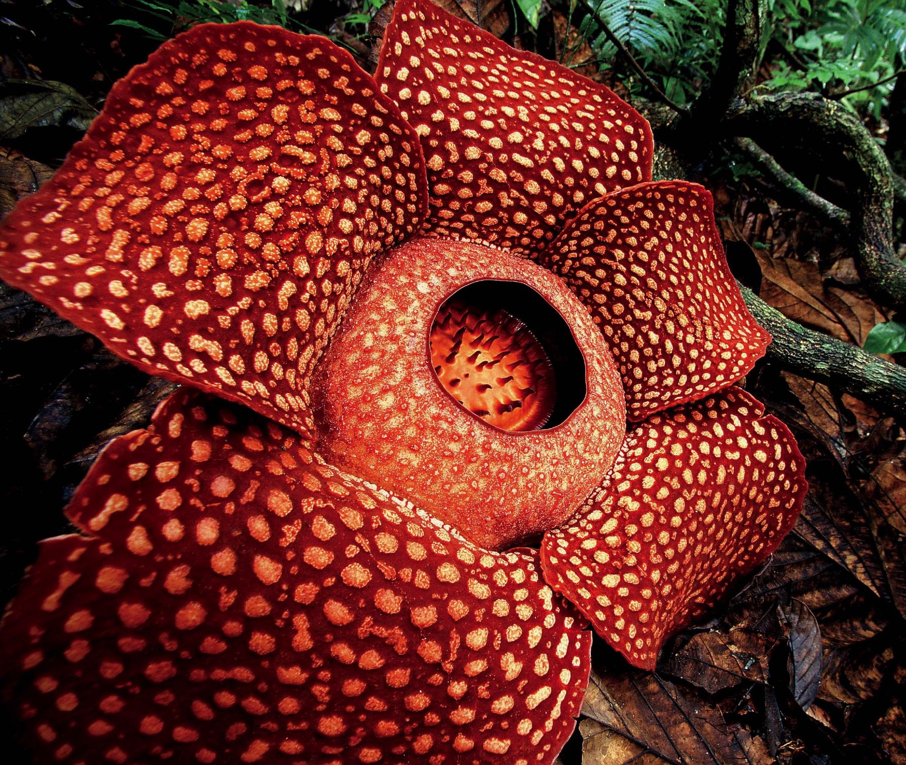

Flowers
Hover over the images!
Introduction
Flowers come in a wide variety. Some are colorful, some smell good, some are poisonous, and others do not even need soil to grow! Here is information for three different flowers.
Rose

- Roses naturally grow in several colors, and people often use the colors to symbolize things.
- For example, red roses represent love, and yellow roses are used to show friendship.
- There are rose gardens around the world, and the largest ones have hundreds of rose varieties and thousands of rose bushes.
Hibiscus

- There are over 300 species of hibiscus plants.
- The yellow hibiscus is the state flower of Hawaii, and other species of hibiscus are the national flowers for Haiti, South Korea, and Malaysia.
- In addition to being used in designs and clothing, the flower can also be made into medicine, teas, and snacks. It even has its own emoji!
Rafflesia arnoldii

- The Rafflesia arnoldii is the largest flower in the world and can be found in the rainforests of Sumatra.
- It is also called the corpse lily because of its unpleasant smell. Although humans do not enjoy it, the smell attracts insects that help pollinate the flower.
- Rafflesia flowers are hard to find, and the buds take months to develop.